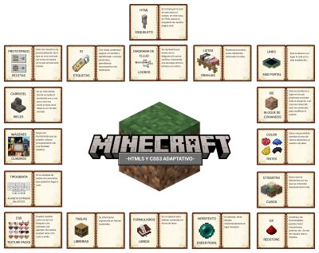
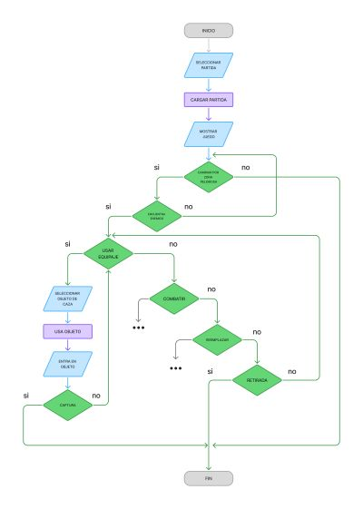
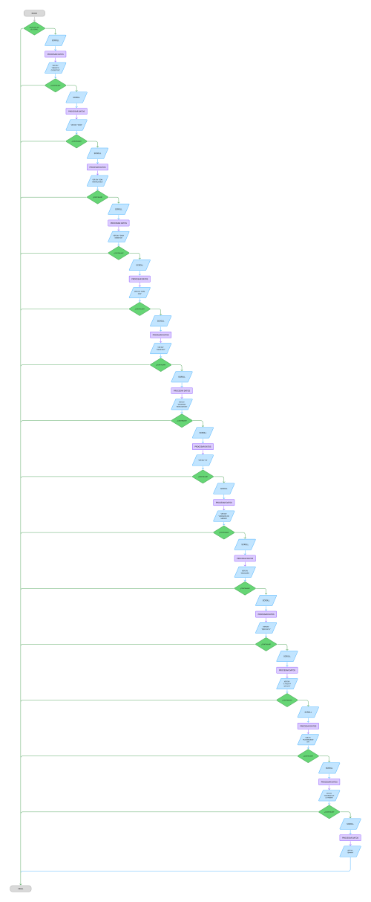
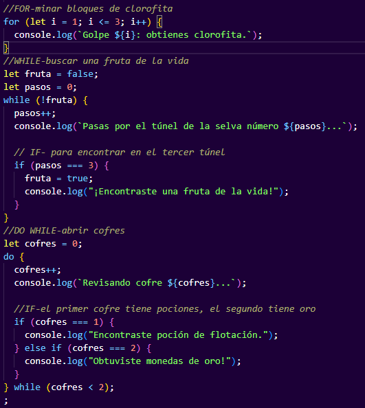
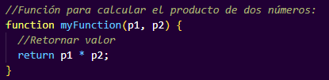
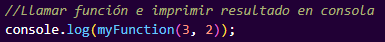
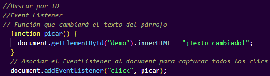

El DOM podria representarse como el plano de la casa, donde cada habitación, puerta, ventana, etc., es un objeto en el diagrama. Podemos usar el plano (DOM) para encontrar una habitación específica (un elemento) y cambiar su color (modificar su estilo) o añadir un mueble nuevo (insertar un elemento). O puede ser como cuando tienes una libreta con contactos. Tú puedes abrirla, buscar a tu amigo y cambiar su número de teléfono. En el DOM haces lo mismo: buscas un elemento y le cambias algo (texto, color, tamaño).
Las animaciones son como hacer que los objetos se muevan o cambien poco a poco. Pueden girar, moverse, agrandarse, desaparecer, cambiar su opacidad, color, etc. Ejemplo: Un semáforo no cambia de golpe, sino que ves cómo pasa de verde, amarillo, rojo poco a poco. Eso es una animación.
Los eventos DOM son acciones que indican que algo ha sucedido en el DOM -Alguien toca un botón. -Alguien escribe algo. -Alguien mueve el mouse. Ejemplo cotidiano: Cuando entras a una tienda y la puerta automática se abre sola porque detectó tu movimiento. El evento fue “te acercaste” y la reacción fue “abrir la puerta”.
Podemos representarlo como todo lo que cuente como cosmético, como: maquillaje, ropa y accesorios. Ya que, estas cambian la forma en la que se ve el cuerpo sin realmente afectar la estructura principal. Modifica como nos vemos en tema de colores, tamaños, y estetica.
En HTML, el viewport (o ventana gráfica) es el área rectangular visible de la ventana del navegador donde se muestra el contenido web. permite a los diseñadores web definir cómo debe escalar y mostrarse una página en diferentes dispositivos, siendo fundamental para el diseño responsivo y para asegurar que el contenido sea legible y adaptable en smartphones y tablets.

Asistí a una conferencia sobre IA aplicada en la arquitectura, en la que básicamente, se habló de todo lo que s hacia en arquitectura, explicando conceptos como
diseño paramétrico, pero dejando lo que eran las aplicaciones de la IA hasta el final, haciendo que para mi, perdiera un poco el sentido de las confrecnais en géneral
que debian estar centradas en IA.
Yo personalmente hubiera enfocado la presentación en hablar de cómo se ha implementado la IA actualmente en el campo de de la arquitectura, por ejemplo, hablando de
herramientas que incluyan IA que se puedan usar para facilitar o apoyar en el diseño arquitectónico.
EJEMPLOS:
MidJourney o Stable Diffusion - sirven para generar imágenes conceptuales rápidas de propuestas arquitectónicas, moodboards o visualizaciones iniciales.
DALL·E 3 o Lumion con IA integrada - aceleran la creación de renders hiperrealistas y variaciones de estilo.
Veras (para Rhino/SketchUp) - plugin de IA que convierte modelos en imágenes realistas directamente desde el software CAD.
Spacemaker (Autodesk) - Usa IA para evaluar miles de configuraciones de un terreno con base en clima, ruido, normativas, etc.
Grasshopper (para Rhino) → Generación paramétrica (más algoritmos que IA).
ESTÁTICAS (Medida fija y constante, no cambian).
-px (pixeles)
-cm (centímetros)
-in (pulgadas)
-mm (milímetros)
-pt (puntos)
-pc (picas)
RELATIVAS (Dependen de otro valor o contexto).
-em (tamaño de fuente relativo al elemento padre)
-rem (tamaño de fuente relativo al elemento raíz)
-% (porcentaje, se ajusta al tamaño del contenedor)
-vw (unidad relativa al ancho de la ventana)
-vh (unidad relativa a la altura de la ventana)
-ch (relativa al ancho del carácter "ch")
-1h (relativa a la altura de línea del elemento "1h")
El decorador @property permite que un método de clase funcione como un atributo de la clase, actuando como un "getter" para obtener su valor.
Es decir, este nos permitira gaurdar un estilo con un nombre, el cual podremos usar como parametro al momento de usar un estilo.
@property --maria {
syntax: "
inherits: true;
initial-value: #ED217C;
}
La etiqueta HTML (picture) actúa como un contenedor para especificar diferentes versiones de una imagen (a través de la etiqueta (source)) para distintos escenarios, como resoluciones o tamaños de pantalla, y una etiqueta (img) de respaldo.
Su propósito principal es implementar imágenes responsivas, permitiendo al navegador seleccionar automáticamente la imagen más adecuada, optimizando así el rendimiento y la experiencia del usuario al reducir la carga de datos innecesarios.
El atributo ALT o etiqueta ALT es un atributo HTML para un texto que describe una imagen.
El atributo ALT se coloca directamente en la etiqueta de la imagen. Si una imagen no se puede mostrar por alguna razón, el atributo ALT proporciona texto alternativo para mostrar en su lugar.

Al momento de asignar una clase, podemos asignar dos clases a un mismo elemento, esto simplemente escribiendo el nombre de las clases separadas por un espacio.
Por ejemplo, al tener tres clases ya con sus características (.tx1), (.diferente) y (-otro) :
(h1 class="tx1 diferente otro">Hola)
Este div usa la regla @media, la cual permite aplicar diferentes estilos a un sitio web dependiendo del tipo de medio (como pantalla o impresión) o de las características del dispositivo, como el ancho o la altura de la ventana gráfica.
¡Intenta reducir esta pantalla ajustando la ventana!
(A partir de cierto punto cambia de color)
JavaScript en HTML sirve para añadir interactividad y dinamismo a las páginas web, transformando el contenido estático (definido por HTML) en elementos activos como animaciones, menús desplegables, validaciones de formularios, o actualizaciones de contenido en tiempo real. Es un lenguaje de programación que se ejecuta en el navegador del usuario, permitiendo crear experiencias de usuario más ricas y funcionales en un sitio web.
JavaScript en mi bitácora (se imprime en consola):

-FUNCIONES: Las funciones son bloques de construcción fundamentales en toda programación. Las funciones permiten una mejor organización del código , modularidad y eficiencia. Las funciones son bloques de código reutilizables diseñados para realizar una tarea particular. Las funciones se ejecutan cuando son "llamadas" o "invocadas".
-RETORNAR VALOR: En JavaScript, las funciones que retornan valores se usan para devolver un resultado específico al código que las llama, usando la palabra clave return. La instrucción return finaliza la ejecución de la función y envía el valor especificado de vuelta al punto donde fue llamada.

-LLAMAR A LA FUNCIÓN: Para llamar una función en JavaScript, debes escribir el nombre de la función seguido de paréntesis (). Si la función espera argumentos, estos se colocan dentro de los paréntesis separados por comas.
-IMPRIMIR RESULTADO: Para imprimir el resultado de una función en la consola de JavaScript, llama a la función y pasa su valor de retorno a console.log().

-BUSCAR POR ID: document.getElementById() es un método de JavaScript que se utiliza para seleccionar un elemento HTML a través de su atributo id único. Devuelve un objeto de elemento que corresponde al id especificado, o null si no se encuentra.
-EVENT LISTENER: addEventListener sirve para adjuntar un oyente de eventos a un elemento HTML, lo que permite ejecutar una función de callback cuando ocurre un evento específico, como un clic o una pulsación de tecla.

TEXTO QUE CAMBIA CON UN CLICK
RESET CSS: elimina por completo los estilos predeterminados del navegador para que el estilo de los elementos se empiece desde cero.
NORMALIZE CSS: busca homogeneizar estos estilos para que sean consistentes entre navegadores, conservando algunos elementos útiles y corrigiendo inconsistencias.
Flexbox es un módulo de diseño de CSS que permite organizar elementos en una sola dimensión (fila o columna) para crear diseños web flexibles y adaptables. Su objetivo principal es distribuir el espacio entre los elementos y proporcionar un control preciso sobre su alineación, tamaño y orden.
EJEMPLO:


-ORDER: Permite especificar el orden en que se muestran visualmente los elementos hijos dentro de un contenedor flexible. Los elementos se ordenan según un valor numérico ascendente; un valor de order menor hace que el elemento aparezca antes que los elementos con un valor mayor.
-FLEX-GROW: Determina cuánto un elemento flexible puede crecer para ocupar el espacio adicional disponible en su contenedor, en comparación con otros elementos flexibles del mismo contenedor. El valor asignado es un número entero (no negativo) que actúa como una proporción.
-FLEX-BASIS: Establece el tamaño inicial de un elemento dentro de un contenedor flexbox, antes de que se distribuya el espacio restante. Su valor puede ser una unidad de medida (como px, %) o palabras clave como auto.
-ALIGN-SELF: Permite alinear un elemento flexible individual a lo largo del eje transversal de su contenedor, anulando la propiedad align-items del contenedor padre.
Bootstrap es un popular framework de código abierto que utiliza HTML, CSS y JavaScript para ayudar a los desarrolladores a crear de forma más rápida y sencilla sitios web y aplicaciones web responsive (que se adaptan a cualquier tamaño de pantalla). Proporciona un conjunto de componentes y plantillas reutilizables, como botones, menús de navegación y formularios, que facilitan el diseño de interfaces de usuario consistentes y funcionales.
EJEMPLO DE ACORDEON USANDO BOOTSTRAP:
.accordion-body, though the transition does limit overflow.
.accordion-body, though the transition does limit overflow.
.accordion-body, though the transition does limit overflow.